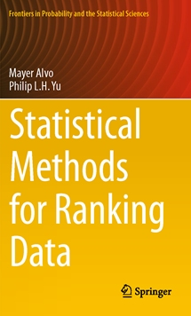

Statistical Methods for Ranking Data by Mayer Alvo and Philip L.H. Yu |
|
This book was motivated by a desire to make available in a single volume many of the results on ranking methods developed by the authors and their collaborators that have appeared in the literature over a period of several years. In many instances, the presentations have a geometric flavor to them. As well there is a concerted effort to introduce real applications in order to exhibit the wide scope of ranking methods. Our hope is that the book will serve as a starting point and encourage students and researchers to make more use of non-parametric ranking methods. The statistical analysis of ranking data forms the main objective in this book. The analysis presented in this book follows two main themes. Beginning with an introduction to exploratory data analysis for ranking data in Chapter 2, we consider in the first part the inferential side of ranking methods. In Chapter 3, we define a distance-based notion of correlation between two complete rankings of the same set of objects. This notion plays an important role in developing tests of trend and of independence in the data. For example, we may test for monotone trends in river pH. Using the concept of compatibility introduced by Alvo and Cabilio (1992), we extend the notion of correlation to the case where some objects are unranked. As a consequence, this serves to widen the range of applicability and we may then test for trends in river pH when some monthly data are missing either randomly or by design. Correlation can also be defined for ranking data on a circle. Such data arise when one is interested in wind direction from an atmospheric site. In Chapters 4 and 5, we make use of the average pairwise correlation among a set of rankings in order to test for randomness in complete and incomplete block designs. We exploit the notion of population diversity in order to develop tests of hypothesis that two or more groups come from the same population. Tests for interaction are discussed next. In Chapter 6, we develop a general theory of hypothesis testing and obtain generalizations of the Wilcoxon test of location for several populations. As well, we develop tests under umbrella alternatives applicable for dose response data that exhibit an increasing trend until it reaches a peak and a decreasing trend thereafter. The contents of Chapters 2-7 are applicable to nonparametric analysis in general. We have not however attempted to provide a comprehensive treatment of nonparametric analysis. For more traditional texts which deal with such topics as analysis of variance in general, goodness-of-fit statistics, and regression and multivariate analysis, we refer the reader to Gibbons and Chakraborti (2011) and Higgins (2004) among others. Our goal instead has been to present a different approach for looking at a variety of inference problems using ranking methods. The second main theme in the book deals with probability and statistical modeling for ranking data. Models can be categorized into four classes: (i) order statistics models (or random utility models), (ii) paired comparison models, (iii) distance-based models, and (iv) multistage models. Typical examples for (i) and (ii) include the Luce model (Luce 1959). They are reviewed in Chapter 8. Unlike the probability models which assume a homogeneous population of judges, predictive models assume that the judges' preferences are heterogeneous and then attempt to identify covariates that affect the judges' preferences or even to predict the ranking to be assigned by a new judge based on his/her socioeconomic variables. A popular example is the rank-ordered logit model (Chapman and Staelin 1982; Beggs et al. 1981; Hausman and Ruud 1987). In some situations, judges' rank-order preferences are derived by a number of common latent factors or form groups of different preferences.Multivariate normal order statistics models and factor analysis are considered in Chapter 9. We introduce decision tree models for ranking data in Chapter 10 in order to delve deeper into the judgment process. These models provide nonparametric methodology for prediction and classification problems. Based on the methodology of testing for agreement introduced in Chapter 4, a further refinement in building decision trees is introduced by considering the test for intergroup concordance at every split during the tree-growing stage. We come full circle in Chapter 11 where we consider extensions of distance-based models. Chapters 10-11 provide a substantial amount of detail and aim to present the researcher with an accurate picture of what is involved in attempting to apply the tools for analyzing ranking data. |
 |